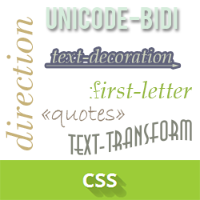

Синтаксис CSS состоит из набора правил. Каждое правило состоит из двух
основных частей: селектора и блока объявлений. Селектор указывает браузеру,
к какому именно элементу на веб-странице нужно применить стиль.

Блок объявлений заключается в фигурные скобки{ }. Внутри скобок
записываются свойства и их значения, которые разделяются двоеточием, а в конце
обязательно ставится точка с запятой (свойство: значение;).
Например, чтобы перекрасить текст в красный цвет, мы пишем: color: red;.